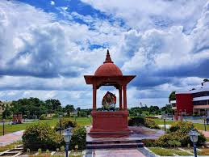
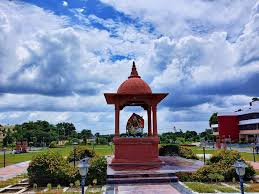

The erstwhile Rajendra Agricultural University, Bihar, Pusa was converted to Dr. Rajendra Prasad Central Agricultural University on 7th October 2016 by the notification in the Official Gazette of the Government of India. Observing the vast potential for agriculture in the eastern region the Government of India passed the THE DR. RAJENDRA PRASAD CENTRAL AGRICULTURAL UNIVERSITY ACT-2016 to provide for the establishment and incorporation of a university for the development of agriculture and for the furtherance of the advancement of learning and pursuit of research in agriculture and allied sciences and declared it to be an institution of national importance. The jurisdiction and responsibility of the University with respect to teaching, research and programmes of extension education at the university level, in the field of agriculture and allied subjects is extended to the whole country with special reference to the State of Bihar. The university has presently six faculties, five constituent colleges, seven research institutes/ stations and fourteen Krishi Vigyan Kendras (Twelve with the university and two with NGOs) to fulfil the teaching, research and extension requirements in respect of agriculture, horticulture, veterinary and allied branches of agriculture.Dr. RPCAU is poised to lay more emphasis on finding better ways and means to improve wellbeing of people dependent on agriculture and allied sectors for their livelihood. All endeavours are directed towards ensuring food security, reducing poverty, and protecting the environment. The vision of the university is to become a highly acclaimed, advanced academic institution in the field of agriculture with global standing
The university is marching ahead with a mission to become an outstanding institution for teaching, research and extension in all disciplines of Agriculture and Allied branches that serves the farming community of the state and country and with the vision to improve the quality of education, research and extension by creating a sound, intellectual and hardworking manpower in agriculture and allied fields at par with the national/international institutes; to improve the nutritional standard and quality of life of the people of Bihar through the promotion of sustainable development in agriculture sector and to provide an integrated outreach to meet the agricultural needs of the state and to act as a link between the university scientists and farming community as well as allied industries.